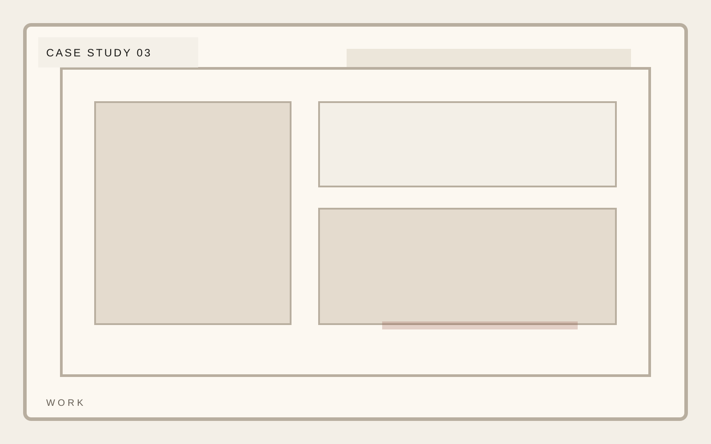

Work mode
Hands-on strategic operator
Independent consultancy
Clarity is a design problem before it is an operating problem.
A consultancy template that prioritizes argument, proof, and a premium reading experience over bloated agency-site patterns. Work pages should prioritize decisions and outcomes over decorative case study framing.
Independent consultancy
Case studies should foreground the decision, the operating tension, and the result rather than defaulting to vague before-and-after language.

Independent consultancy
Outcomes should be specific enough to feel earned and sparse enough to keep the page premium.